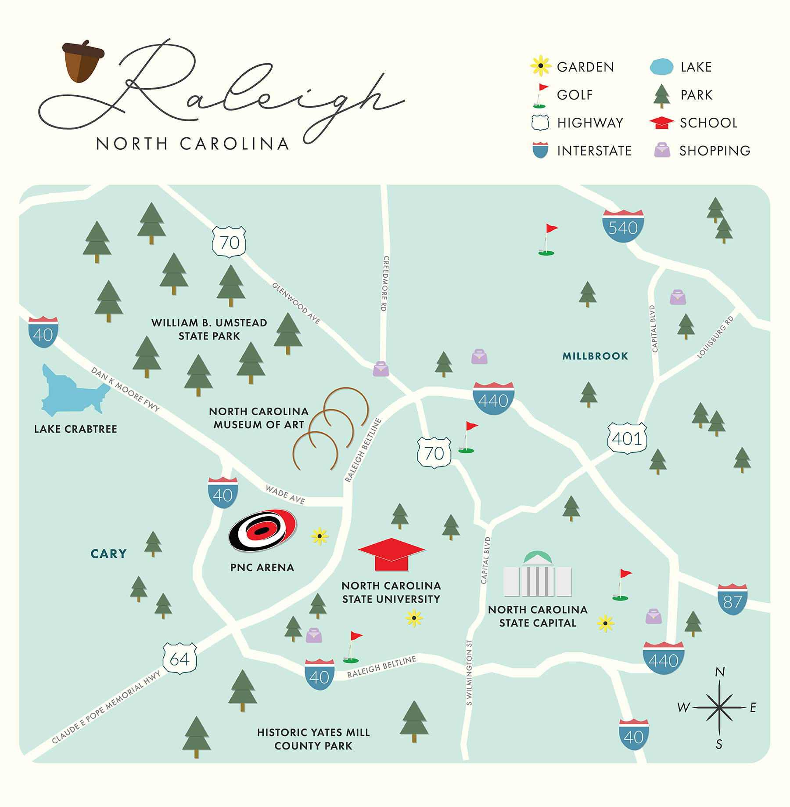

Crystal Zimmerman
Graphic Designer
I work as a full time graphic designer at a full service advertising agency. In my spare time, I am taking graphic design classes. Since I am self-taught, I want to learn and absorb as much as I can. A goal of mine is to broaden my knowledge and become proficient in HTML and CSS. I want to open as many doors of opportunity as I can when it comes to graphic design.
Featured Projects
View selected projects below. More information about myself can be found on my Linkedin.
Map of Raleigh, North Carolina
I created this map of Raleigh in my Computer Design Tech class at Wake Tech Community College. I used Adobe Illustrator to create all of the elements. I wanted to create a simple yet striking map that highlighted a lot of Raleigh's wonderful landmarks such as the North Carolina Museum of Art and PNC Arena.
Coffeebee Cold Brew Beverage Campaign

This is a a project I created in one of my first classes at Wake Tech, Computer Design Basics. I was tasked with creating a label for a beverage of my choosing. As an avid coffee lover, I decided to create a label for a Cold Brew coffee named Coffeebee.
Work Experience
Graphic Designer II
Advertising Agency
August 2020 - Present
Responsibilities:
- Conceptualize and design graphics and art including print ads, direct mail, e-marketing, web banners, animations, websites, and more for a wide array of clients using Adobe Photoshop, Illustrator, and InDesign
- Express desired moods and themes through accurate usage of color theory
- Integrate proper typography for smooth and easy-to-understand graphic display
- Develop strategic layouts that incorporate all necessary information
Education
Wake Technical Community College - Raleigh, NC
Graphic Design Certificate, Design Basics Certificate, Web and Graphic Design Certificate, 2020-2021
Florida State University - Tallahassee, FL
Bachelor of Science, Double major in Marketing and Hospitality Management, Minor in Communication, 2010-2014
• Dedman School of Hospitality Study Abroad Program, Leysin, Switzerland (Summer 2012)
• Dean's List: 7 Semesters